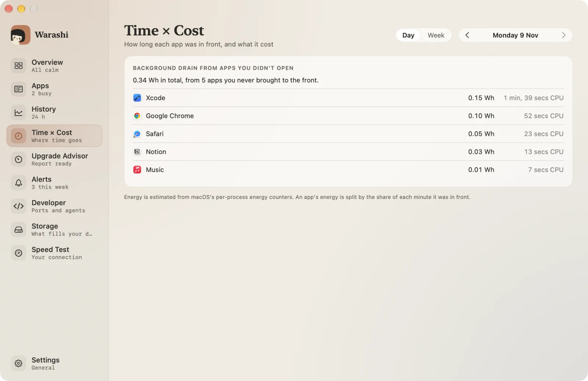
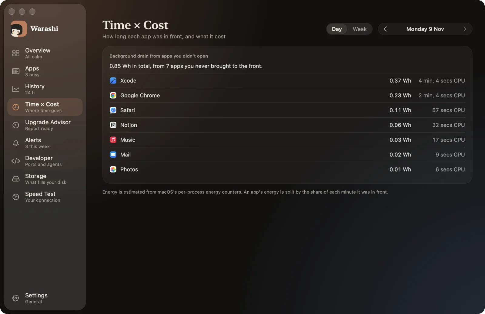
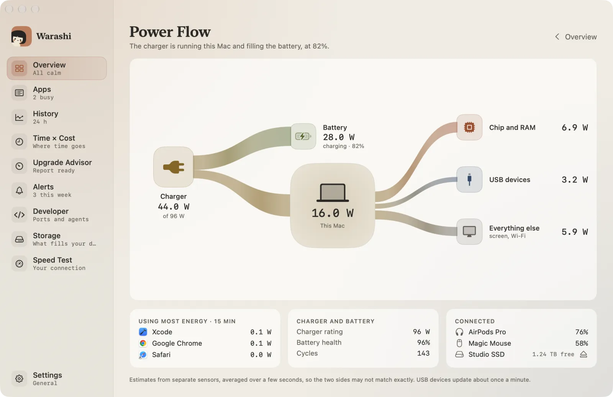
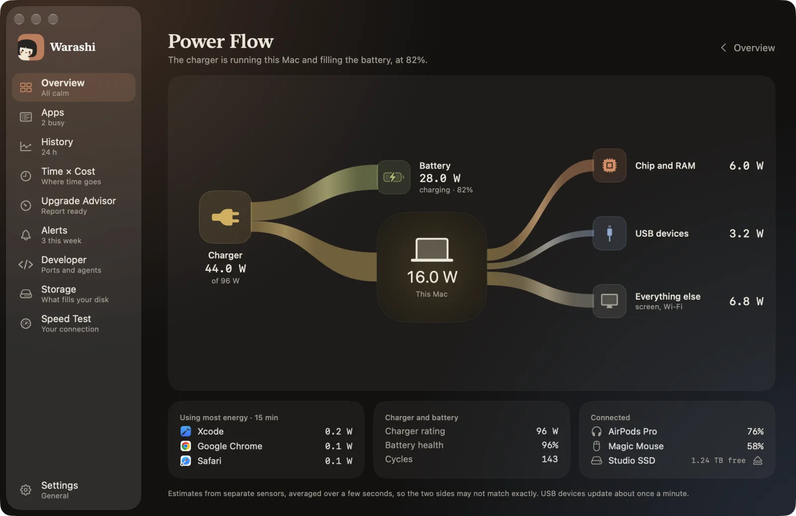

L’autonomie dépend de ce qui tourne, de la fréquence à laquelle cela réveille la puce, et de l’effort du GPU. Certaines apps coûtent cher seulement pendant que vous les utilisez ; d’autres vident la batterie en arrière-plan toute la journée.
Consulter Énergie dans Moniteur d’activité
Ouvrez l’onglet Énergie de Moniteur d’activité. « Impact énergétique » est un score relatif pour l’instant présent ; « Puissance sur 12 h » indique la moyenne des 12 dernières heures. Repérez les apps aux chiffres élevés que vous n’utilisiez pas activement.
Les principales causes de consommation
- Des onglets de navigateur avec vidéo, publicités ou tableaux de bord en direct, même en arrière-plan.
- Les apps qui sollicitent le GPU : écrans externes à fréquence de rafraîchissement élevée, fonds d’écran animés, appels vidéo.
- La synchronisation et l’indexation après des mises à jour ou de gros changements de fichiers (analyse de Photos, Spotlight).
- Des apps Electron laissées ouvertes mais inutilisées.
Distinguer « au premier plan » et « en arrière-plan »
La question utile n’est pas seulement « qu’est-ce qui a consommé de l’énergie ? » mais « combien cela m’a-t-il coûté par heure d’utilisation réelle, et qu’est-ce qui a consommé alors que je ne l’ai même pas regardé ? ». Temps × Coût de Warashi répond exactement à cela, grâce aux compteurs d’énergie par processus de macOS.
Surveiller l’état de la batterie
L’état de la batterie baisse lentement avec les cycles de charge et la chaleur. Réglages Système › Batterie l’affiche ; Warashi peut vous alerter lorsqu’il passe sous 80 % ou baisse plus vite que d’habitude.




Autres guides
- Pourquoi mon Mac est-il lent ? Trouvez l’app responsable
- De combien de RAM ai-je besoin sur un Mac ?
- Mac qui chauffe ? kernel_task et limitation thermique expliqués
- Faut-il changer de Mac ? Laissez vos propres données décider
- Qu’est-ce qui occupe de l’espace sur mon Mac ?
- Tester son débit Internet sur un Mac